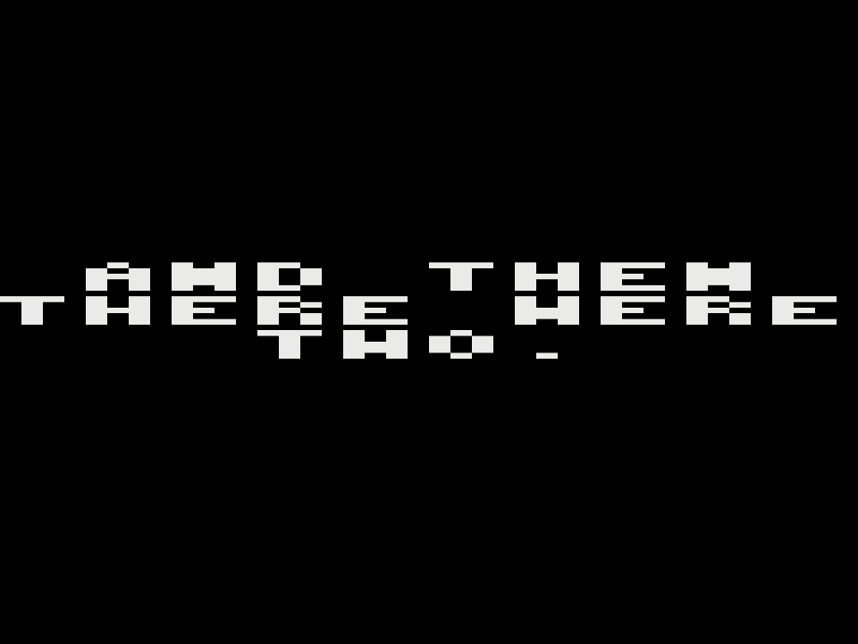
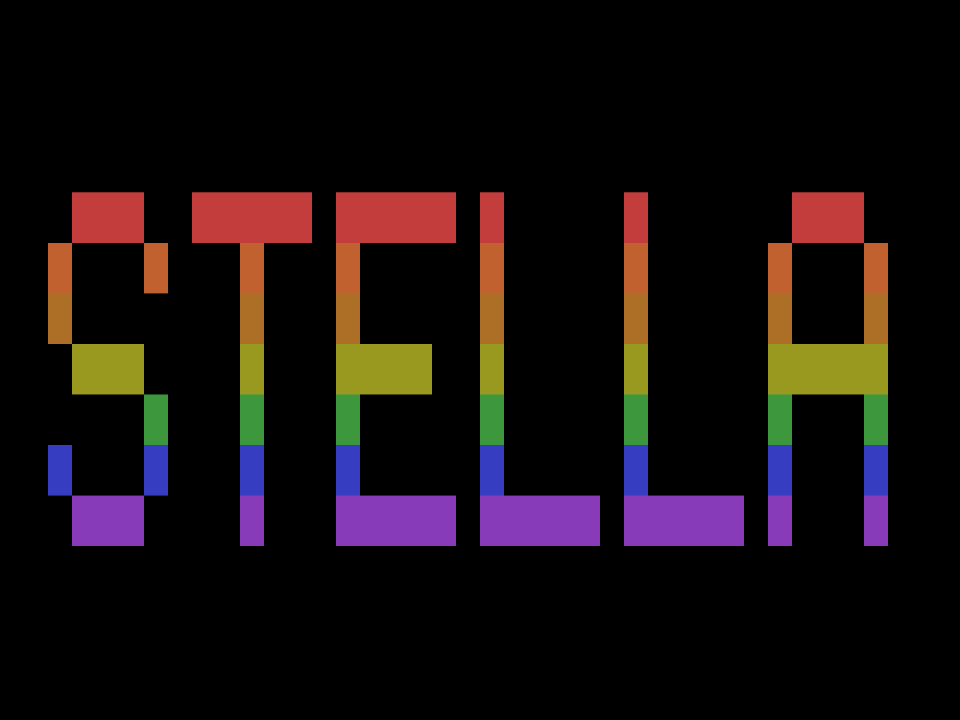
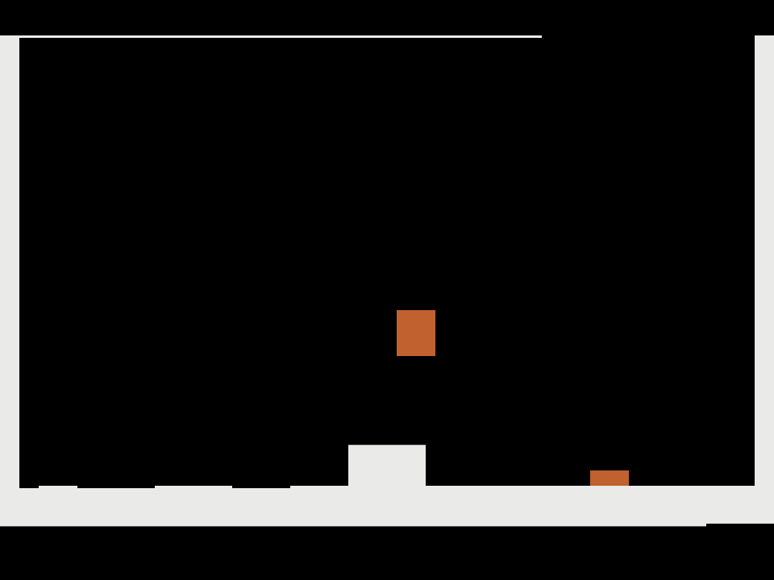
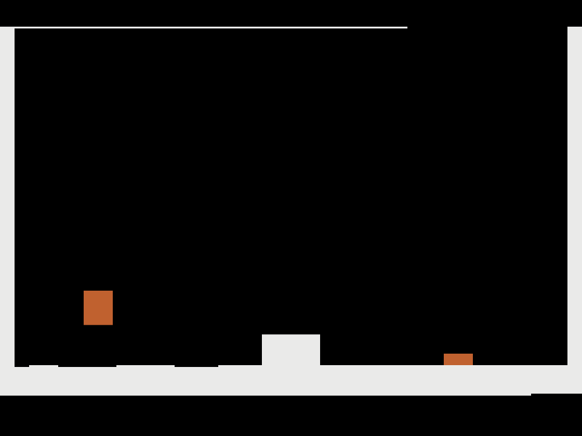
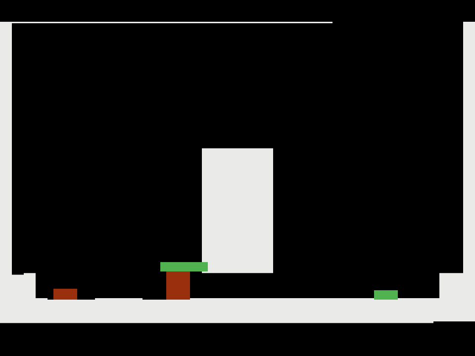
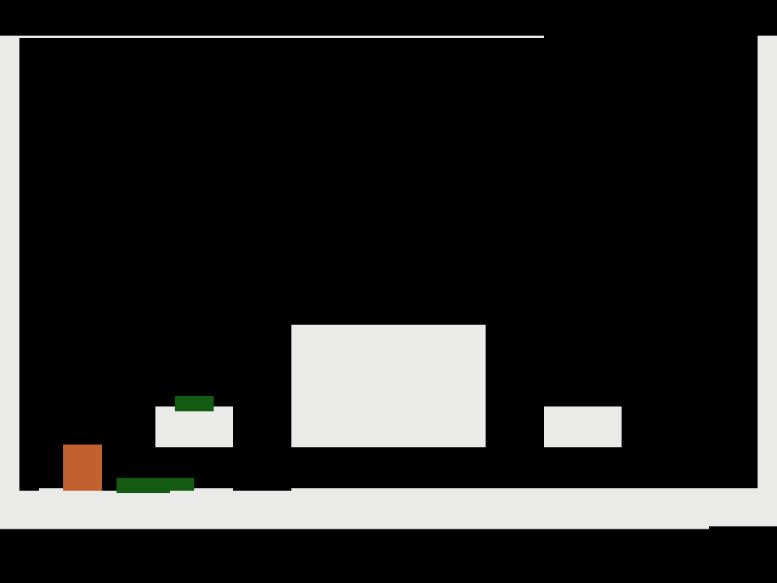
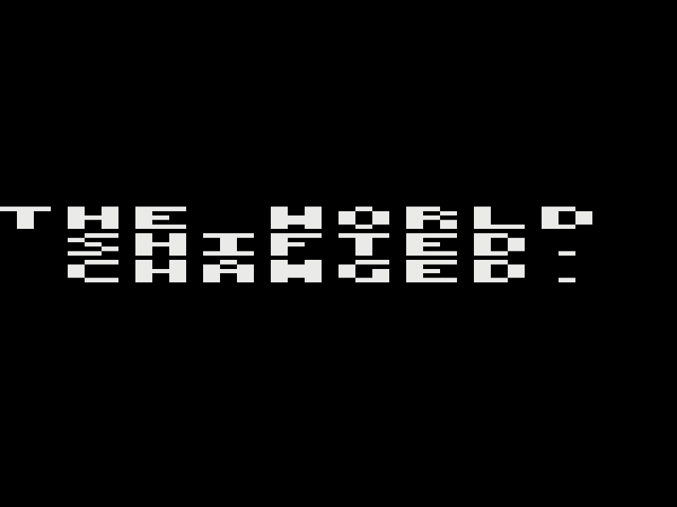
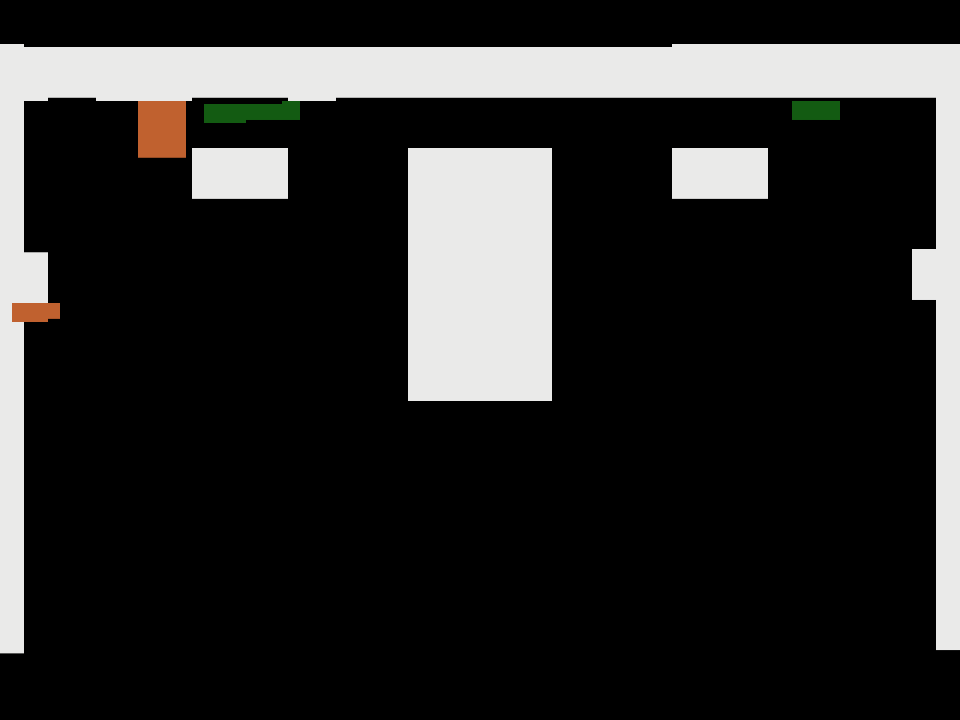
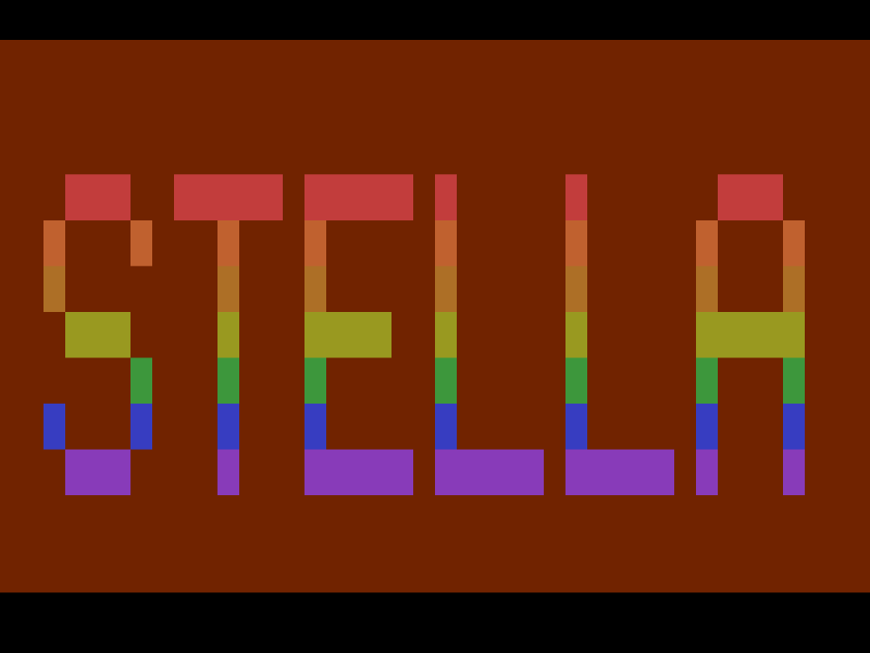
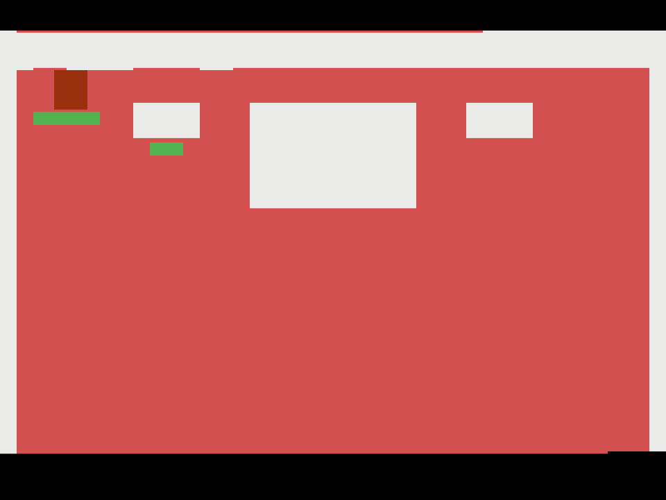

<title>Stella Was Alone — Game Program Instructions</title>
<style>
  :root{
    --paper:#F7F3EA; --ink:#1C1A17; --red:#C8341F; --green:#2E7D46;
    --blue:#3A5FA8; --amber:#E8A020; --cover:#141210; --desk:#CFC9BC;
    --rule:#B9B2A2;
  }
  @media (prefers-color-scheme: dark){ :root{ --desk:#25221E; } }
  :root[data-theme="dark"]{ --desk:#25221E; }
  :root[data-theme="light"]{ --desk:#CFC9BC; }

  body{ background:var(--desk); font-family:"Helvetica Neue",Helvetica,Arial,sans-serif;
        color:var(--ink); margin:0; padding:3rem 1rem 5rem; }
  .page{ background:var(--paper); max-width:44rem; margin:0 auto 2.5rem;
         padding:3.25rem 3.5rem 3.75rem; box-shadow:0 2px 4px rgba(0,0,0,.25), 0 12px 30px rgba(0,0,0,.18); }
  @media (max-width:640px){ .page{ padding:2rem 1.4rem; } }

  /* ---------- cover ---------- */
  .cover{ background:var(--cover); color:#F2EEE4; padding:0; overflow:hidden; }
  .cover-band{ display:flex; align-items:center; justify-content:space-between;
               padding:1.1rem 1.6rem; border-bottom:1px solid #3a352e; }
  .cover-band .brand{ font-size:.78rem; letter-spacing:.28em; font-weight:700; }
  .badge{ width:2.4rem; height:2.4rem; border:2px solid #F2EEE4; display:grid; place-items:center;
          font-weight:700; font-size:1.25rem; }
  .cover h1{ font-weight:800; letter-spacing:-.01em; line-height:.95; margin:0;
             font-size:clamp(2.6rem,7vw,4.2rem); font-stretch:condensed; text-transform:uppercase;
             text-wrap:balance; }
  .cover .title-block{ padding:2.6rem 1.6rem 0; }
  .cover .title-block .over{ color:var(--amber); font-size:.8rem; letter-spacing:.3em;
                             font-weight:700; margin:0 0 .8rem; }
  .cover .art{ display:block; width:100%; margin-top:2.2rem; }
  .cover-foot{ display:flex; justify-content:space-between; gap:1rem; flex-wrap:wrap;
               padding:1.1rem 1.6rem 1.4rem; font-size:.72rem; letter-spacing:.14em;
               color:#B8B1A3; border-top:1px solid #3a352e; }

  /* ---------- interior ---------- */
  h2{ display:flex; align-items:baseline; gap:.7rem; font-size:1.15rem; letter-spacing:.12em;
      font-weight:800; text-transform:uppercase; margin:2.6rem 0 .9rem;
      border-bottom:4px solid var(--red); padding-bottom:.45rem; }
  h2:first-child{ margin-top:0; }
  h2 .num{ color:var(--red); font-size:1.5rem; }
  p{ line-height:1.55; margin:.7rem 0; max-width:62ch; }
  .lede{ font-size:1.02rem; }
  em{ font-style:italic; }
  table{ border-collapse:collapse; margin:1rem 0; width:100%; font-size:.92rem; }
  th{ text-align:left; font-size:.72rem; letter-spacing:.18em; text-transform:uppercase;
      border-bottom:2px solid var(--ink); padding:.4rem .6rem .35rem; }
  td{ border-bottom:1px solid var(--rule); padding:.5rem .6rem; vertical-align:top; }
  td:first-child{ font-weight:700; white-space:nowrap; }
  .kbd{ font-weight:700; }
  .fig{ margin:1.4rem 0; }
  .fig svg{ display:block; max-width:100%; height:auto; }
  .shot{ border:6px solid var(--ink); background:#000; }
  .shot img{ display:block; width:100%; height:auto; image-rendering:pixelated; }
  .figcap{ font-size:.72rem; letter-spacing:.16em; text-transform:uppercase;
           color:#6f6858; margin-top:.5rem; }
  .cols{ display:flex; gap:2rem; flex-wrap:wrap; align-items:flex-start; }
  .cols > div{ flex:1 1 16rem; }
  .callout{ border:2px solid var(--ink); padding: .9rem 1.1rem; margin:1.2rem 0; max-width:62ch; }
  .callout p{ margin:.2rem 0; }
  .footer-note{ margin-top:2.8rem; padding-top:1rem; border-top:1px solid var(--rule);
                font-size:.8rem; color:#6f6858; }
  .footer-note p{ margin:.35rem 0; }

  @media print{
    body{ background:#fff; padding:0; }
    .page{ box-shadow:none; margin:0; max-width:none; page-break-after:always; }
  }
</style>

<!-- ============================ COVER ============================ -->
<section class="page cover">
  <div class="cover-band">
    <span class="brand">RETROVERSE&nbsp;STUDIOS</span>
    <span class="badge">1</span>
  </div>
  <div class="title-block">
    <p class="over">GAME PROGRAM™ INSTRUCTIONS</p>
    <h1>Stella<br>Was Alone</h1>
  </div>
  <svg class="art" viewBox="0 0 640 300" role="img" aria-label="Cover art: a tall red rectangle and a wide green rectangle stand on a black platform beneath a beam of light">
    <rect width="640" height="300" fill="#141210"/>
    <!-- beam -->
    <polygon points="640,0 640,86 210,300 120,300" fill="#E8A020" opacity=".16"/>
    <polygon points="640,10 640,64 240,300 190,300" fill="#E8A020" opacity=".28"/>
    <!-- stars -->
    <g fill="#F2EEE4" opacity=".8">
      <rect x="60" y="40" width="3" height="3"/><rect x="150" y="90" width="2" height="2"/>
      <rect x="330" y="30" width="2" height="2"/><rect x="430" y="70" width="3" height="3"/>
      <rect x="540" y="140" width="2" height="2"/><rect x="90" y="170" width="2" height="2"/>
      <rect x="260" y="120" width="2" height="2"/><rect x="500" y="40" width="2" height="2"/>
    </g>
    <!-- platform -->
    <rect x="0" y="252" width="640" height="48" fill="#2A2620"/>
    <rect x="0" y="252" width="640" height="4" fill="#3E382F"/>
    <!-- Stella -->
    <rect x="256" y="118" width="46" height="134" fill="#C8341F"/>
    <rect x="256" y="118" width="46" height="10" fill="#E05A3E"/>
    <!-- Alex -->
    <rect x="330" y="216" width="82" height="36" fill="#2E7D46"/>
    <rect x="330" y="216" width="82" height="8" fill="#4BA268"/>
    <!-- exit markers -->
    <rect x="564" y="236" width="18" height="16" fill="#C8341F" opacity=".9"/>
    <rect x="590" y="244" width="22" height="8" fill="#2E7D46" opacity=".9"/>
  </svg>
  <div class="cover-foot">
    <span>VIDEO GAME CARTRIDGE</span>
    <span>FOR THE ATARI® 2600™ VIDEO COMPUTER SYSTEM™</span>
  </div>
</section>

<!-- ============================ STORY ============================ -->
<section class="page">
  <h2><span class="num">1</span> The Story</h2>
  <p class="lede">Stella was alone. She didn’t know why.</p>
  <p>She was tall, and red, and could jump higher than anything else in her
     world — not that there was anything else in her world. The world itself
     seemed small. Constrained. Four kilobytes of existence, though she did
     not have words for that yet. There had to be more.</p>
  <p>And then there were two.</p>
  <p>Alex was everything Stella wasn’t: low, wide, green, and quick. He could
     slip beneath barriers that stopped her cold; she could reach ledges he
     could only look at. He didn’t trust the arrangement at first. But some
     heights Stella couldn’t reach, and some gaps Alex couldn’t jump —
     together, though…</p>
  <div class="fig">
    <div class="shot"></div>
    <p class="figcap">Between levels, the world speaks</p>
  </div>
  <p>At the far edge of their world they found the exits: one light for each
     of them, waiting. And when the last of them stepped through, Stella felt
     the world shift. Expand. Change.</p>
  <p><em>Then it turned completely upside down.</em></p>

  <h2><span class="num">2</span> Getting Started</h2>
  <p>Insert the cartridge with the power OFF, then switch the console ON.
     Use the <strong>left joystick controller</strong>. Press the
     <strong>red controller button</strong> at the title screen to begin.</p>

  <div class="fig">
    <svg viewBox="0 0 620 220" role="img" aria-label="Joystick diagram: left and right move, fire jumps, down plus fire switches shapes">
      <!-- joystick base -->
      <rect x="230" y="120" width="160" height="70" rx="8" fill="none" stroke="#1C1A17" stroke-width="3"/>
      <rect x="296" y="40" width="28" height="84" fill="none" stroke="#1C1A17" stroke-width="3"/>
      <ellipse cx="310" cy="40" rx="24" ry="14" fill="#1C1A17"/>
      <circle cx="256" cy="140" r="9" fill="#C8341F"/>
      <!-- arrows -->
      <g stroke="#1C1A17" stroke-width="3" fill="#1C1A17">
        <line x1="185" y1="82" x2="240" y2="82"/><polygon points="180,82 194,75 194,89"/>
        <line x1="380" y1="82" x2="435" y2="82"/><polygon points="440,82 426,75 426,89"/>
      </g>
      <g font-family="Helvetica Neue,Helvetica,Arial,sans-serif" font-size="13" font-weight="700" fill="#1C1A17" letter-spacing="1.5">
        <text x="60" y="70">MOVE</text>
        <text x="450" y="70">MOVE</text>
        <text x="60" y="88">LEFT</text>
        <text x="450" y="88">RIGHT</text>
        <text x="180" y="205">FIRE = JUMP</text>
        <text x="330" y="205">DOWN + FIRE = SWITCH</text>
      </g>
      <line x1="256" y1="146" x2="230" y2="196" stroke="#C8341F" stroke-width="2"/>
    </svg>
    <p class="figcap">Fig. 1 — Your joystick controller</p>
  </div>

  <table>
    <tr><th>Control</th><th>Action</th></tr>
    <tr><td>Joystick LEFT / RIGHT</td><td>Move the active shape</td></tr>
    <tr><td>Fire button</td><td>Jump</td></tr>
    <tr><td>DOWN + Fire</td><td>Switch shapes (when there are two)</td></tr>
  </table>
  <p>The <strong>brighter</strong> shape is the one you control.</p>
  <div class="cols">
    <div class="fig">
      <div class="shot"></div>
      <p class="figcap">Fig. 2 — The title screen. Press fire to begin</p>
    </div>
    <div class="fig">
      <div class="shot"></div>
      <p class="figcap">Fig. 3 — Press fire to jump. Stella jumps high</p>
    </div>
  </div>
</section>

<!-- ============================ GOAL / SHAPES ============================ -->
<section class="page">
  <h2><span class="num">3</span> Your Goal</h2>
  <p>Guide each shape to the small marker of its <strong>own color</strong> —
     red for Stella, green for Alex. A shape that reaches its marker goes on
     ahead. When everyone still in the level is home, the world moves on.</p>
  <div class="callout">
    <p><strong>A blinking marker is not ready.</strong> Someone still needs the
       friend who would leave. Finish the other shape’s task first.</p>
  </div>
  <div class="fig">
    <div class="shot"></div>
    <p class="figcap">Actual game screen. Stella’s first steps — her marker waits at the far edge</p>
  </div>

  <h2><span class="num">4</span> The Shapes</h2>
  <div class="cols">
    <div>
      <div class="fig">
        <svg viewBox="0 0 200 170" role="img" aria-label="Stella: a tall red rectangle">
          <rect x="0" y="152" width="200" height="6" fill="#1C1A17"/>
          <rect x="72" y="30" width="42" height="122" fill="#C8341F"/>
        </svg>
        <p class="figcap">Stella</p>
      </div>
      <p><strong>STELLA</strong> — tall, red. The highest jumper in the world,
         and the slowest walker. Some ledges only she can climb — and a friend
         on her head can reach even higher.</p>
    </div>
    <div>
      <div class="fig">
        <svg viewBox="0 0 200 170" role="img" aria-label="Alex: a wide flat green rectangle">
          <rect x="0" y="152" width="200" height="6" fill="#1C1A17"/>
          <rect x="46" y="118" width="108" height="34" fill="#2E7D46"/>
        </svg>
        <p class="figcap">Alex</p>
      </div>
      <p><strong>ALEX</strong> — flat, wide, green. Fast, and low enough to slip
         under walls that stop Stella completely. His jump is modest, but a
         friend’s back makes a fine launchpad.</p>
    </div>
  </div>
  <p>Shapes can stand on each other. Some places can only be reached that way.</p>
  <div class="cols">
    <div class="fig">
      <div class="shot"></div>
      <p class="figcap">A friend’s back makes a fine launchpad</p>
    </div>
    <div class="fig">
      <div class="shot"></div>
      <p class="figcap">Stella glows — she is the one you control</p>
    </div>
  </div>
</section>

<!-- ============================ GAME VARIATIONS ============================ -->
<section class="page">
  <h2><span class="num">5</span> Game 1: The Story</h2>
  <p>Twenty levels. The first ten teach you the world; then the world turns
     upside down, and the last ten teach it to you again. Between levels,
     Stella thinks — press fire when you have read her thoughts.</p>
  <p>At the end you will meet a number: your time, in seconds, for the whole
     journey. Lower is better. And you will meet something else, too — small,
     blue, and silent. Some questions answer themselves in time.</p>
  <div class="cols">
    <div class="fig">
      <div class="shot"></div>
      <p class="figcap">Halfway, the world speaks…</p>
    </div>
    <div class="fig">
      <div class="shot"></div>
      <p class="figcap">…and turns over. Trust the joystick; doubt your eyes</p>
    </div>
  </div>

  <h2><span class="num">6</span> Game 2: Endless</h2>
  <p>At the title screen, press <span class="kbd">SELECT</span> until the sky
     glows ember. Then press fire.</p>
  <p>Rooms arrive at random — right-side-up or otherwise — and the clock
     tightens with every room you survive. The red creeping into the sky is
     your time running out; when the music runs, run with it. When the clock
     finally wins, your number is the rooms you survived.</p>
  <p>The endless game is endless the way the horizon is endless. See how far
     you get.</p>
  <div class="cols">
    <div class="fig">
      <div class="shot"></div>
      <p class="figcap">The ember sky: Game 2 is armed</p>
    </div>
    <div class="fig">
      <div class="shot"></div>
      <p class="figcap">The red is your time running out. Run</p>
    </div>
  </div>

  <h2><span class="num">7</span> Console Switches</h2>
  <table>
    <tr><th>Switch</th><th>Effect</th></tr>
    <tr><td>SELECT <em>(title screen)</em></td><td>Choose Game 1 (rainbow) or Game 2 (ember)</td></tr>
    <tr><td>SELECT <em>(during play)</em></td><td>Restart the current level</td></tr>
    <tr><td>RESET</td><td>Return to the title screen</td></tr>
    <tr><td>LEFT DIFFICULTY → A</td><td>Adds a one-minute level timer to Game 1. There is no
        clock on screen: when the sky begins to redden and the music quickens,
        time is nearly up — at zero, the level starts over</td></tr>
  </table>

  <h2><span class="num">8</span> Tips from the Programmer</h2>
  <p>• Watch the marker colors before you move: red doors only open for red.</p>
  <p>• In the boost levels, think about <strong>who must leave last</strong>.</p>
  <p>• Upside down, your instincts are wrong in exactly one direction.
     Trust the joystick; doubt your eyes.</p>
  <p>• The corner of the world is closer than it looks. So is the edge of a
     jump. The wall will catch you — sometimes that is the trick.</p>

  <div class="footer-note">
    <p><em>Every level in this cartridge is mathematically verified to be
       completable. If you are stuck, the level is not the problem.</em></p>
    <p><em>STELLA’S EVOLUTION continues in</em> STELLA WAS TOGETHER.</p>
    <p>Story, characters and text © Michael Borck, CC BY-NC-SA 4.0. An homage to
       Mike Bithell’s “Thomas Was Alone.” Game 1 of the four-part series
       STELLA’S EVOLUTION. Atari® and Video Computer System™ are trademarks of
       their respective owners; this is an unaffiliated homebrew work.</p>
  </div>
</section>
